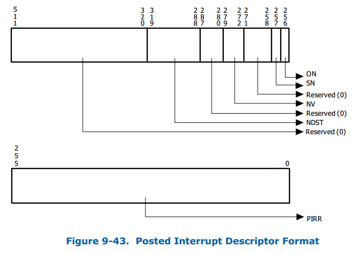
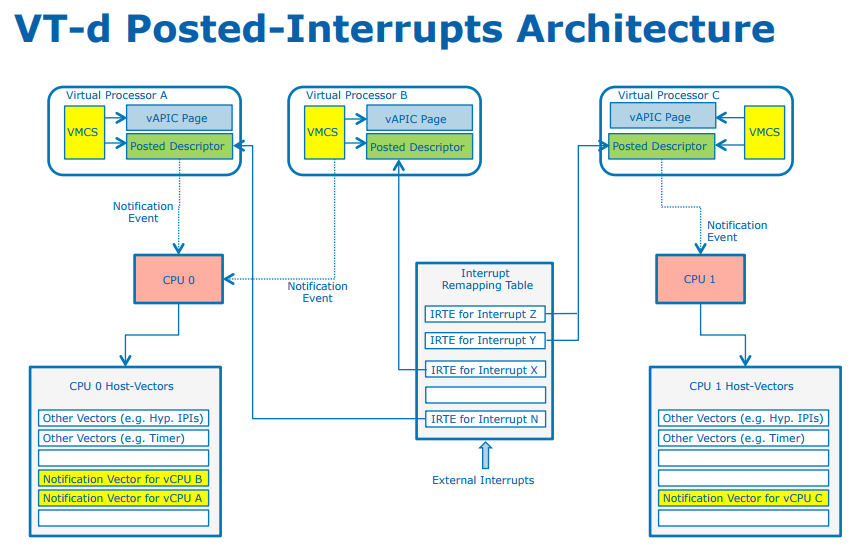
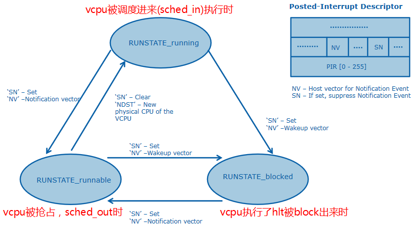
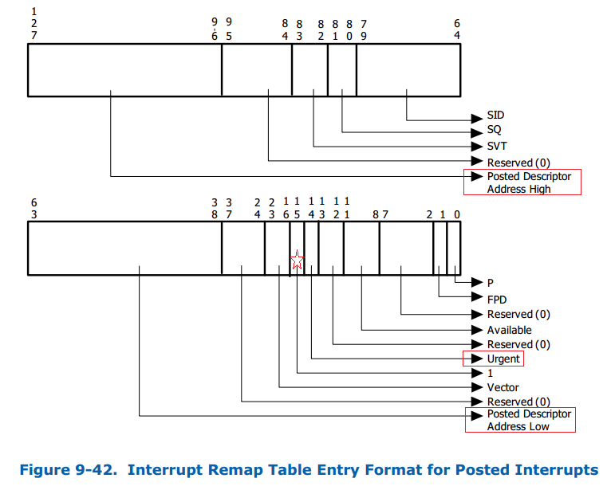

VT-d Interrupt Remapping的引入改变了以往设备中断的投递方式，Remapping格式的中断请求不再包含目标CPU的APIC-ID、中断vector号、投递方式等重要信息，而是仅仅提供了一个16 bit的interrupt_index用来索引中断重定向表项(IRTE)，这个改变带来的最大好处是提升了中断处理的灵活性。在虚拟化的环境下，为了提升虚拟机的中断实时性，Intel在Interrupt Remapping的基础上加以改进 引入了Interrupt Posting机制，从硬件层面实现了中断隔离和中断自动迁移等重要特性。
1 Interrupt Posting 简介
VT-d Interrupt Posting是基于Interrupt Remapping的一种扩展的中断处理方式，其主要用途是在虚拟化场景下，可以大幅提升VMM处理直通设备中断的效率。硬件通过Capability Register(CAP_REG)的PI位来报告interrupt posting capability。
根据前面介绍Interrupt Remapping的文章可以知道，所有的Remapping格式中断请求都需要通过中断重映射表来投递，IRTE中的Mode域(IM)用来指定这个remappable中断请求是interrupt-remapping方式还是interrupt-posting方式。
- IRTE的IM位为0表示中断按照remappable方式处理；
- IRTE的IM位为1表示中断按照posted方式来处理。
在Interrupt Posting模式下，新增了一个与VCPU相关的内存数据结构叫做"Posted Interrupt Descriptor"(PD)，这是一个64-Byte对齐的数据结构并且直接被硬件用来记录将要post的中断请求。PD结构包含以下的域：
- Posted Interrupt Request (PIR)域，提供记录需要post的中断占256bit每个bit代表一个中断号。
- Outstanding Notification (ON)域，由硬件来自动更新，用来表示是否有中断请求pending。当此位为0时，硬件通过修改其为1来产生一个通知事件告知中断请求到来。接收这个通知事件的实体(处理器或者软件)在处理这个posted interrupt时后必须将其清零。
- Suppress Notification (SN)域，表示non-urgent中断请求的通知事件是否要被supressed(抑制)。
- Notification Vector (NV)域，用来指定产生posted-interrupt“通知事件”(notification event)的vector号。
-
Notification Destination (NDST)域，用来指定此中断要投递的VCP所运行物理CPU的APIC-ID。

在Interrupt Posting模式下IRTE格式相当于Remapping模式有很大不同（参考附录），IRTE的格式相对于Remapping模式新增了以下几个域：
- 中断请求对应的Posted Interrupt Descriptor数据结构地址，包含高地址和低地址2个域；
- Urgent (URG)标志来指定中断请求是否需要实时处理；
- 一个用来指定要post的vector号的Vector域，与Remapping格式不同的是posted-format 的IRTEs的Vector域是用来决定Posted Interrupt Descriptor里的PIR域的哪个bit要置位。
2 Interrupt Posting 的硬件处理步骤
当一个Remapping格式的中断请求IM位为1时，意味着这个中断请求要按照Interrupt Posting方式进行处理。整个过程中断硬件处理流程如下:
-
如果中断请求索引到的IRTE的IM位被置位(1b)：
-
硬件按照posted format解读IRTE，如果IRTE的格式检查不通过，那么该请求被blocked。如果检查通过从IRTE中提取Posted Interrupt Descriptor的地址(PDA-L/PDA-H)，中断请求的vector号以及中断请求是否为URG等信息。
-
硬件会对Posted Interrupt Descriptor内存数据结构执行一个read-modify-write原子操作：
首先读取PD的内容并对其进行检测，如果发现格式不对（例如reserved域不为0）那么将该请求block掉。如果检测通过那么获取当前的PIR,ON,NV,NDST域信息后，按照下面的规则对PD进行原子更新：
- 根据IRTE的Vecotr域设置PIR对应的bit
- 计算出 X = ((ON == 0) & (URG | (SN == 0))), 如果X==1那么把ON置位。
如果X==1，那么产生一个“通知事件中断”，并且这个中断的属性为：
- NSDT表示VCPU所在的CPU的physical APIC-ID (注意：xAPIC和x2APIC模式下的不同)
- NV域指定了被用来通知目的CPU有个posted-interrupt已在pending的“通知事件”的中断向量。（注意不是要post的中断请求vector号，这个仅仅用做通知用）
- Delivery mode域被强制设定为Fixed (000b)
- Re-direction Hint域强制清零 (0b)
- Triger Mode域被设置为Edge (0b)
- Trigger Mode Level域被设置为Asserted (1b)
-
3 Interrupt Posting 的软件处理步骤
当一个设备被直通给虚拟机后，虚拟机初始化的过程中VMM会设置好此设备的MSI/MSI-X中断对应的IRTE并标志IM位为1b，标志这是一个Posted Interrupt。当直通设备投递一个中断后，硬件首先会去查询irq对应的IRTE并从IRTE中提取记录的Posted Interrupt Descriptor地址和vector信息，然后更新PIR域和ON域并且将vector信息写入到VCPU的vAPIC Page中，直接给处于None Root模式的VCPU注入一个中断，整个过程不需要VMM的介入从而十分高效。Intel的虚拟化专家FengWu使用下面的图很好的描述了Interrupt Posting的处理过程：

从上面的描述来看，Interrupt Posting是不是看起来很简单？然而，实际实现上却还是要复杂多，不过也不要被吓到额！ 从软件层面来说，VMM需要参与进来做以下一些额外的工作来使能Interrupt Posting机制：
- 为虚拟机的每个VCPU分配一个PD用来存放此VCPU的Posted Interrupt信息（PD的地址会被记录到VCPU的VMSC里面）；
- VMM需要在每个PCPU上安排2个中断vector用来接受通知事件：
- 其中一个物理vector被称之为'Active Notification Vector' (ANV)，它被用来post通知事件到处于Running状态的VCPU上（这个IPI中断是guest接收的）。
- 另一个物理vector被称之为'Wake-up Notification Vector' (WNV)，它被用来post通知事件到处于Blocked状态的VCPU上（这个IPI中断是host接收的）。
- 对于直通到此虚拟机的直通设备，VMM都会干预进来（因为虚拟机的IOxAPIC,LAPIC等都是kvm内核模块来模拟的），VMM能够知道到每个VCPU上的vector号分配情况；
- 对于每个直通设备的中断：
- VMM会为每个中断源分配一个IRTE，并且把对应的guest分配的vecotr号填入到IRTE的vector域。
- VMM会将每个VCPU对应的PD地址填入到此中断源的对用的IRTE地址域。
- 如果此中断需要立即处理，那么VMM会将对此中断源对应的IRTE中URG域置成1。
- 同时VMM还需要为VCPU使能APICv特性（包括了'virtual-interrupt delivery'和'process posted interrupts'），并且将此VCPU的VMCS域POSTED_INTR_NV配置为ANV，并将申请的PD的地址配置到VMCS的POSTED_INTR_DESC_ADDR域来告诉VCPU它关联的PD在哪儿。（注：这些操作在VCPU初始化流程中完成）
- 在VCPU调度的过程中，VMM需要按照下面的方式来管理VCPU的调度状态：
- 当VCPU被scheduler选中调度进来运行的的时候，此时VCPU的状态被标志为'Active'状态。这个时候VMM需要将PD的NV域更新为ANV的值。 同时在这种场景下，此VCPU上接受的Posted Interrupt中断会被直接复制到vAPIC Page中，guest在非根模式下就能直接处理此中断，而不需要VMM的参与。
- 当一个VCPU被抢占（Preempted），例如时间片到期了，这时候需要将PD的SN域标志为1，即将VCPU更新为'Preempted'状态，告诉硬件当前VCPU已经没在非根模式下运行了。 此时，这个VCPU上的non-urgent中断都会被接受但不会产生通知事件。 但如果这个VCPU上有标志为URG类型的中断时，VMM同时也会将PD的NV域修改为WNV，这样一来VMM就能够将URG中断请求投递给处于not running状态的VCPU，并进行适当的软件处理（例如，抢占正在同一个物理CPU上运行状态的其他VCPU，并将自己调度进来）。
- 当一个VCPU执行了hlt指令或者触发了ple，VMM也会干预进来将VCPU给block出来，并且将VCPU状态标识为Hlted状态。在此状态下VMM需要将VCPU对应的PD的NV域设置为WNV。这样一来，当中断请求post到此VCPU时，VMM能够接受到Wake-up Notification Event事件通知并做出适当的软件操作。（例如：立即对此VCPU进行一次调度）
- 当VCPU重新进入非根模式或者从hlt恢复执行时（注意这个时候vCPU还没进入根模式下），VMM对此VCPU上处于pending状态的posted interrupt进行处理：
- 首先将PD的NV域设置为ANV以标志VCPU为Active状态；
- 扫描PD的PIR域检测是否有处于pending状态的posted interrupt请求；
- 如果有处于pending状态的posted interrupt请求，VMM会在LAPIC上生成一个vector号为ANV的self-IPI(注意：在还未真正enter guest之前当前CPU处于关中断状态)。 那么当VCPU刚刚打开中断，准备进入到非根模式下的时候，就立刻接受到一个self-IPI，那么处理器硬件这时候就会将它当做posted-interrupt通知事件来处理，立刻从LAPIC中读取pending的中断并进行处理。 这样的好处是将guest对于posted interrupt的处理完全off load到处理器硬件上。
- VMM同样能够将 posted interrupt processing 技术应用到模拟设备产生的虚拟设备中断处理上（不仅仅是直通设备额）。而这只需VMM执行原子操作'post'一个虚拟中断到PD上，并给PD中NDST的逻辑CPU发送一个IPI作为通知事件告诉该CPU有posted interrupt到来。（这里说的是VT-x的Posted Interrupt）
- 当VCPU在不同PCPU之间进行迁移时，VMM会对VCPU对应的PD的NDST域进行更新，将NDST改为VCPU要迁移的目的PCPU的APIC-ID。这也就是说，在VCPU迁移的过程中我们也顺便完成了中断迁移。这样一来，新的posted interrupt 通知事件到来时就会被自动路由的新的PCPU上，是不是很巧妙？
备注：请思考，ANV和WNV通知事件的目的分别是什么？
-
ANV事件通知的目的是： 当vCPU被抢占或者处于Post Block阶段，这个时候vCPU是处于Runnable状态（已经被调度器选中，但还没进入非根模式enter_guest），这个时候如果收到直通设备中断，那么就需要ANV事件来告知一下，这样在vCPU进入非根模式下能够立刻处理这个中断。
-
WNV事件通知的目的是：当vCPU被Block出来的时候会进入休眠状态，没有特殊事件不会被调度器调度，那么这时候来中断了就用WNV来通知一下， 将vCPU唤醒进来参与调度，让vCPU及时处理中断。
再次引用一下FengWu的图片来说明下VCPU在发生状态改变的时候，VMM做了哪些操作来保证posted interrupt能够顺利完成，请读者配合上面的描述自行进行梳理。

4 附: Posting格式中断重映射表项的格式
